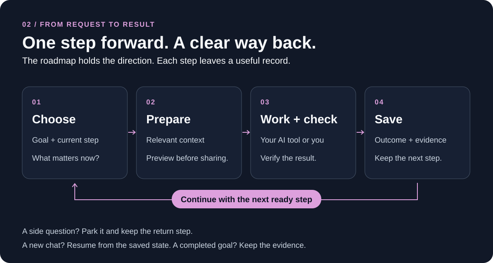
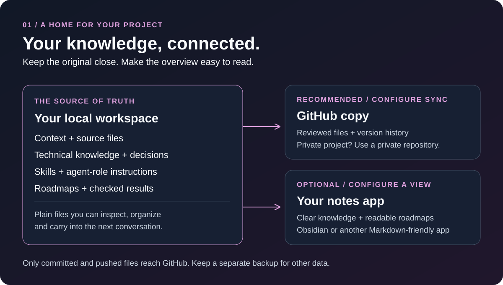
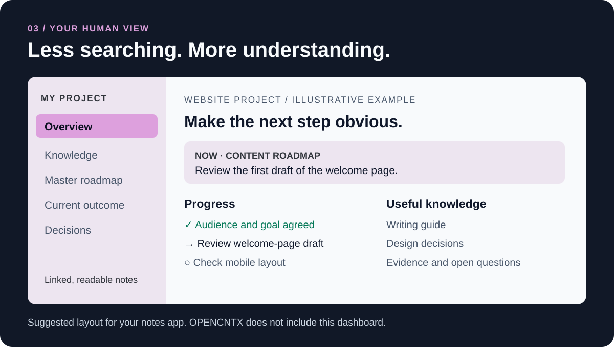

Your computer
The original context, sources, technical knowledge, decisions, skills, agent-role instructions, roadmaps and evidence. Your AI host uses the instructions.

Your knowledge. Your next step.
Available software: v1.7.4 · Roadmap and next work. Project-aware roadmap routing is now available.
Keep what your project has learned. Give AI a focused brief. Pick up the next step without explaining everything again.

How it works
Start with your local project. Add a reviewed remote copy and a readable knowledge view when you need them.

The original context, sources, technical knowledge, decisions, skills, agent-role instructions, roadmaps and evidence. Your AI host uses the instructions.
A recommended private repository for reviewed files and version history. Only committed and pushed files are copied. Configure sync and back up other data separately.
A simple view of the knowledge and progress. Use Obsidian or another Markdown-friendly app. Link clear summaries to the original technical records.
GitHub synchronization and notes-app updates are optional integrations. Installing OPENCNTX does not activate them.
Small → medium → large → mega
Keep one master roadmap for the project. Add detail where it helps, and separate independent outcomes into child roadmaps.
A setting or paragraph. Add one check to the relevant existing roadmap, verify it and close it.
Small · one check
A feature with a few steps. Prepare, implement and check within the active roadmap.
Medium · several steps
An independent migration or feature gets a child roadmap. Related extensions stay with the existing child.
Large · one outcome
Several major deliverables share one master. Each child records dependencies, checkpoints and its next step.
Mega · several outcomes
Size guides the detail; the relationship to the current goal decides the route. Your host supplies these facts. A side question keeps a return anchor; a new chat resumes saved state.
Explore the roadmap rulesMade for the person following along
What are we doing? What is done? What happens next? Where is the explanation? Your overview should answer these at a glance.

Keep short summaries, decisions and linked roadmaps in your notes app. Keep raw logs and detailed evidence in the technical workspace. A new conversation can return to the current task and the knowledge it needs.
Take the visual tourGet started
Install an immutable release, enter a small project, and keep the complete flow visible.
pipx install "git+https://github.com/CNTX-PROJECT/OPENCNTX.git@v1.7.4"
opencntx --version
opencntx init
opencntx pack --preview
opencntx pack
opencntx verifySafety boundary
You choose what to share. Verification checks that file bytes match the recorded evidence; you still check whether the work is right.
OPENCNTX does not run an AI. Your AI tool or you perform the task; optional continuity tools record progress and the next step.
Documentation
Install, create a first package, inspect it, and remove it safely.
See what OPENCNTX reads, records, proves, and deliberately does not decide.
Add durable sources, tasks, evidence, recovery, and a bounded roadmap.
Review the local boundary, exclusions, limitations, and reporting route.
Use the complete reference only when you need exact syntax.
Attach small steps, create child roadmaps for distinct outcomes, and retain return anchors.
All documentation · Releases and current status · Visual system
Support
Question or reproducible bug? Use Support.
Possible vulnerability? Follow the private route in the Security Policy. Never post secrets publicly.